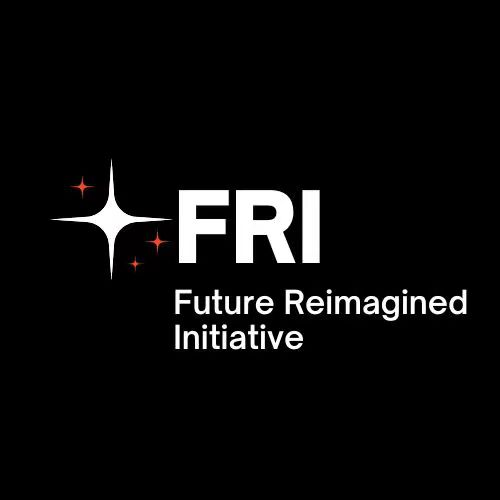
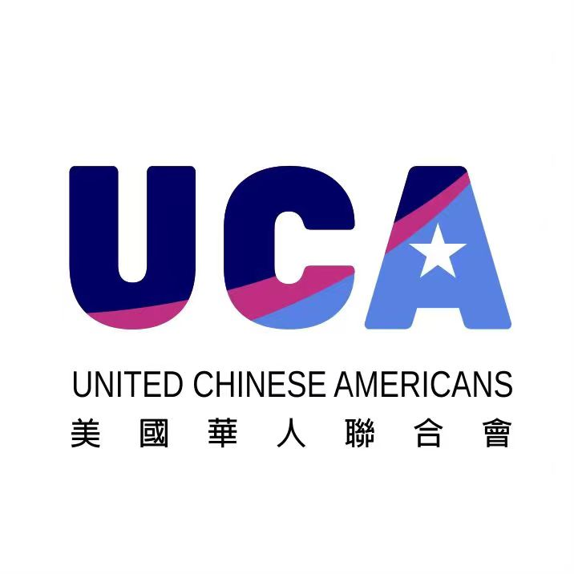
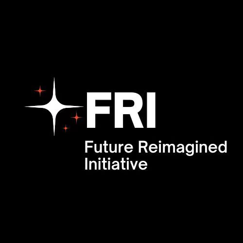
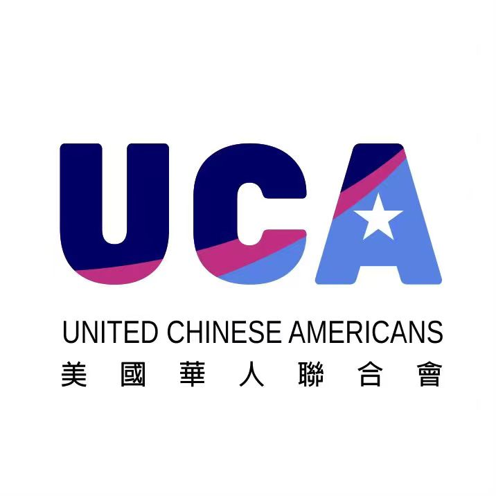

---
#
# By default, content added below the "---" mark will appear in the home page
# between the top bar and the list of recent posts.
# To change the home page layout, edit the _layouts/home.html file.
# See: https://jekyllrb.com/docs/themes/#overriding-theme-defaults
#
layout: main
---
2025 Montgomery International Film Festival

 {% include summary_row.html
image='./assets/img/WechatIMG5128.jpeg'
id='about'
title='Celebrating Art House Films'
content="We aim to foster a community of free thinking filmakers, those who are
pushing the boundaries of sound and vision into a new frontier.
We believe the world is ready for the reemergence of Art House films, and
we are bringing distributors, filmmakers, media, and fans together to
achieve global awareness of this vital art form. All are welcome to join
our party at the beautiful Montgomery County in Maryland. We look forward to
seeing you there!
{% include summary_row.html
image='./assets/img/WechatIMG5128.jpeg'
id='about'
title='Celebrating Art House Films'
content="We aim to foster a community of free thinking filmakers, those who are
pushing the boundaries of sound and vision into a new frontier.
We believe the world is ready for the reemergence of Art House films, and
we are bringing distributors, filmmakers, media, and fans together to
achieve global awareness of this vital art form. All are welcome to join
our party at the beautiful Montgomery County in Maryland. We look forward to
seeing you there!
"
%}
{% include summary_row.html
reverse=true
image='./assets/img/front-page2.png'
title='Supporting MIFF'
content="We rely on our sponsors and supporters to support the
Montgomery International Film Festival and help us to promote
and celebrate Art House Films from beautiful Montgomery County Maryland. Interested?
Reach out to us for more info on how to become a sponsor, co-organizer, or donor for the
upcoming 2020 festival!
Become a sponsor"
%}


 


